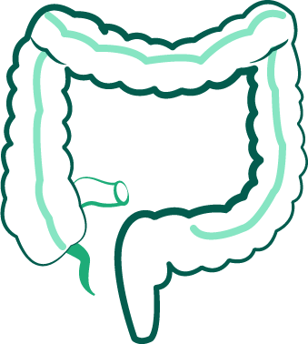

Scroll to begin

Acupuncture is practice that originates from Traditional Chinese Medicine. In acupuncture practice, the body has an energy, Qi (pronounced chee), that flows through meridians and pathways.
A proper flow of Qi provides good overall health. When this flow is interrupted or blocked, disease, pain and inflammation can occur. Acupuncturists utilize more than 2,000 acupuncture points to redirect and aid the flow of Qi to relieve pain and heal disease.
In 1991, a 5,000-year-old mummified European man was found in an alpine glacier. The man’s body featured a series of tattoos in straight lines and crosses. Research has found that this may be proof of the use of acupuncture in early Europe.
The first known documentation of the practice of acupuncture is in The Yellow Emperor’s Classic of Internal Medicine. At this time, the idea of the Qi as a vital life source contributing to good overall health, and the pathways and meridians it flows through are established. Acupuncture points are not mentioned.
Methods of traditional Chinese medicine are established and acupuncture becomes one of the standard healing practices in China. It is recorded in multiple texts.
During the reign of the Ming dynasty, The Great Compendium of Acupuncture and Moxibustion (heat) is published and becomes the central text for acupuncture teaching and practice. In addition to the concept of Qi, the text included meridians and 365 acupuncture points within the body. Acupuncturists insert needles into these points to aid the flow of the Qi and heal their patients.
By decree of the Daoguang Emperor, acupuncture is excluded from the Imperial Medical Institute because it is seen as superstitious. The practice is continued by rural healers.
Coinciding with China’s adoption of western medicine, acupuncture is outlawed in China.
With the rise of the communist government, traditional medicine and acupuncture is legalized again. Acupuncture research institutes are created across China and patients can begin receiving acupuncture treatment within specialized departments in hospitals.
A member of the US press corps visited China in preparation for a diplomatic visit of President Nixon. He was given acupuncture as part of the healing process after an emergency appendectomy and spoke about his experience in the New York Times. The adoption of acupuncture in the United States begins.
Acupuncture was more widely approved in the USA when the NIH concluded that there was evidence that the practice is useful in healing certain conditions.
Click on a point in the hand to see what acupuncturists utilize it for!
The liver is the organ that metabolizes foreign substances in the body. Therefore, liver acupuncture points are used to open pathways to detoxify the body.

Acupuncture has been proven beneficial for those suffering from insomnia by the NIH. Acupuncture treatment in addition to traditional medications was shown to be more effective than medications alone.
Many with inflammatory bowel diseases (Chron’s Disease and Ulcerative Colitis) seek acupuncture to mitigate their symptoms. Studies have compared the effectiveness of Acupuncture treatment and traditional drugs and found that acupuncture is more efficient.
